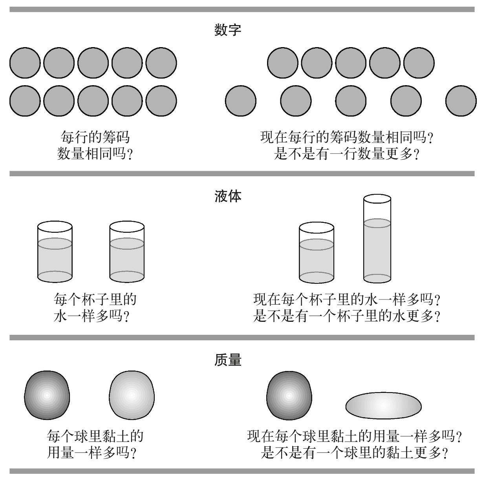

皮亚杰（1896—1980）原先是一位生物学家，他早期研究的是软体动物。他对生物机体如何适应环境非常有兴趣。在之后的职业生涯中，他将实验方法用于研究人类认知的起源。从观察自己的三个孩子开始，皮亚杰建立了一套全面的理论来解释逻辑思维是如何出现并随着发展而改变的。他的一个关键假设是，婴儿天生的心理结构是有限的，此后会根据经验来适应环境。对环境的每次适应都会带来部分的平衡，但是接下来又会发现新的不适合这些结构的环境特征。因此，知识会相应地发展，不断地适应客体和事件的特点，直到发展为成人的心理结构。皮亚杰提出，儿童的知识结构会经历一系列阶段，儿童在不同的年龄段会以不同的方式思考和推理。
感知运动阶段：0—2岁。皮亚杰将知识结构称为图式，不同的发展阶段有着不同的图式。在婴儿期和幼儿期，思维被限定为感知运动图式。图式是行为与环境互动时的组织模式。婴儿通过看、听、摸和尝来获得知识，还依赖抓握和吮吸一类的运动反应。这些行为创造了最基本的图式，这些图式协调起来，以便将一个东西抓起来然后放进嘴里等等。像这样，通过逐渐整合简单反射，高阶行为出现了，有意图的行动成为可能。例如，月龄大一点的婴儿可能会反复将东西丢在地上以观察它掉落的轨迹。
婴儿逐渐能够预测某些行动的后果。在皮亚杰看来，这个行为证明了儿童开始内化不同的感知运动图式。婴儿被认为是通过与环境的互动来积极地建构知识的。皮亚杰认为儿童会积极地获取知识，这一理论对教育领域有着极深远的影响。关于行动及其后果的知识的内化标志着概念思维的开启：独立于知觉和行动的认知表征。但是，在1970至2000年之间，很多发表的心理学实验显示，婴儿对客体的认知表征出现的时间似乎比皮亚杰认为的要早得多。最近，随着成人认知心理学领域中“具象化”理论的发展，感知运动知识根本的重要性得到了认同。即便在成人期，知觉和运动知识也是我们概念知识的一部分。因此，皮亚杰对“行动逻辑”的关注看来确实是相当有远见的。
前运算阶段：2—7岁。在感知运动思维之后发展出的大脑结构被称为“前运算”，因为它们只能负担部分的逻辑推理。要对支配客体行为和逻辑关系的逻辑概念有完整的理解，还需要进一步的发展。在前运算阶段，儿童忙着用不同的符号形式（文字、意象）将他们以行动为基础的感知运动概念变成更有条理的心理结构。但是，他们的努力会受到很多前运算推理特点的限制，使得他们的心理结构还不能形成一个十分完整的系统。这些特点主要包括自我中心主义、中心化和不可逆性。前运算阶段的儿童是自我中心的，他们在思考、感受和理解世界时都是从自己的角度出发。他们往往将思考集中于问题或情境的某一个方面，而忽略其他方面。最后，他们还不擅长为了全面了解一个问题而倒推心理步骤（例如在推理顺序中）。
皮亚杰主要研究的逻辑运算（“具体运算”）是守恒性、传递性、序列化和类包含（见图8）。他为了研究这些运算而设计出的简单任务现在已经被儿童心理学家重复过成百上千次了。例如，守恒性指的是儿童明白，在呈现方式被改变后，物品（例如筹码）并不会发生数量上的变化。皮亚杰认为，如果儿童认为数量被改变了，则证明他们不理解不变性原理，即数量不会随着外观的改变而变化。不变性原理是我们数字系统的基础，也为物质世界提供了稳定性（见第五章）。有的儿童会认为数量被改变了，这是因为他们可能只关注了那一行筹码的长度，而忽视了其他的知觉线索，例如两行筹码是1︰1对应的。

图8 皮亚杰守恒性任务的一些例子
前运算阶段的自我中心主义、中心化和不可逆性都会造成儿童内在心理结构的不平衡。此外，守恒性任务中的语用部分，也许对幼儿而言意味着他们需要改变他们的回答，例如一个明显很重要的成人改变了一行筹码然后反复地问关于数量的问题。如果摆出的是“淘气的泰迪熊”而不是筹码，幼儿则不太容易改变答案。近期针对不同的具体运算而进行的更多实验研究指出，许多不符合逻辑的回应取决于任务场景的某些方面，既有言语的也有非言语的。
更近期的实验显示，幼儿的逻辑能力本身似乎并不差。只是，幼儿缺乏在不同场景中有效运用逻辑所需的元认知和执行功能技能。确实，皮亚杰对于自我中心主义、关注重点（中心化）和换位思考的理论观察确实与当下关于抑制控制和注意灵活性的心理学概念非常相似。与皮亚杰的理论不同，当代研究对早期的逻辑能力有着“丰富的”解读。研究人员不再假设幼儿缺乏成功推理所必需的逻辑结构，而是认为幼儿的逻辑结构还不成熟。
具体运算阶段：7—11岁。当儿童进入具体运算阶段后，前运算的特点最终会被克服。具体运算使儿童可以对数量和数字概念进行抽象推理。例如通过运用传递性具体运算，儿童可能不需要数积木检查答案也能推算出9>7>5。因此具体运算被认为是更加灵活和抽象的。随后的研究想要证明具体运算出现的时间比皮亚杰提出的要早。但是，如何衡量“能力”是一个关键要素。如果一个具体运算，例如守恒性，严重依赖于评估任务的言语和非言语部分，我们怎么才能知道什么时候守恒性能力一定已经出现了呢？这个理论问题对于早期教育有着重要的实际影响。有些教育者认为，在认知上“做好准备”之前，儿童不应该学习某些类型的材料。但是教学本身会促使认知能力得到发展。皮亚杰的理论更注重知识发展的顺序，而非哪种心理结构会出现在哪个具体的年龄。
形式运算阶段：11岁至成人。皮亚杰将成人化的思维定义为能够在大脑中组合不同具体运算的能力。皮亚杰称其为“二阶推理”。成人和青少年可以在大脑中将传递性一类的基本关系应用于客体及其关系。他们还可以结合传递性和1︰1对应等，以形成新的思维结构，例如类比。皮亚杰的形式运算和命题逻辑相似，都是一组主管假设和演绎的数学关系。因此，形式运算思维是科学的思维。确实，很多用来探索形式运算发展的皮亚杰测试都包含假设演绎推理。一个例子是提前判断一个特定的物体掉进水里后是会浮起来还是沉下去。
在形式运算测验中，个人表现的好坏似乎取决于和具体运算中相同的因素。幼儿通常会被无关的信息干扰，因为他们的工作记忆容量较小、不太擅长抑制矛盾的或无关的信息，以及不太会对自己的认知活动进行反思。但是，并没有研究证实青少年会经历由具体运算到形式运算的思维转变，皮亚杰对“思维逻辑”（以心理结构来对照数学结构）的关注也可以被认为是有远见的。多数当代认知神经科学领域内的进步取决于精细算法的发展，精细算法显示了，单个脑细胞简单的开关反应如何构建了知识结构。这进一步发展了皮亚杰的观点：认知结构应该反映数学结构。